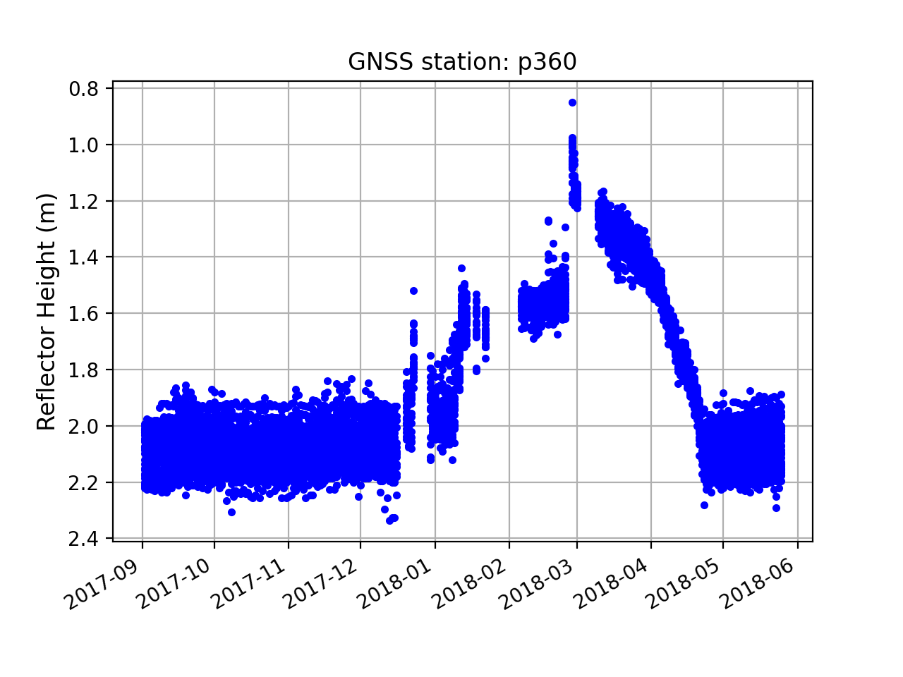

Island Park, Idaho

Station Name: p360
Location: Island Park, Idaho
Archive: UNAVCO
DOI: https://doi.org/10.7283/T5DB7ZR3
Ellipsoidal Coordinates:
Latitude: 44.31785
Longitude: -111.45068
Height: 1857.861 m
Data Summary
Station p360 is located to the west of Yellowstone National Park. At an elevation of ~1858 m, winter snowfall can be frequent and heavy. The site has been recording multi-GNSS data since March 2020. Before that time, only the L2C GPS data are of reliable quality for snow accumulation studies. p360 was part of PBO H2O
The station is in a flat, grassy plain with minimal obstacles or changes in topography. Complicated elevation and azimuth angle masks are not required.
Take a Quick Look at the Data
First you need to make an SNR file. Ordinarily one can only access L2C data at
this site using the 1-sec data. To support gnssrefl users, UNAVCO
has created special RINEX files with L2C SNR data in them at a friendlier sample
rate, 15 sec. Use the special archive:
rinex2snr p360 2017 290 -archive special
Then run quickLook:
quickLook p360 2017 290
The default return is for L1. This plot confirms our concerns about the quality of the L1 data. It also suggests the southern quadrants are preferred to other quadrants.

Now check L2C:
quickLook p360 2017 290 -fr 20

These reflector height retrievals are far superior to the L1 data. The southern quadrants give more consistent retrievals than for the north. This is confirmed in the QC plot show here:

Analyze the Data
First we will set the analysis paramaters
using make_json_input. This analysis will use the L2C frequency and
will use QC metrics derived from the previous plot (for peak to noise ratio and amplitude).
make_json_input p360 44.31785 -111.45068 1857.861 -l2c True -peak2noise 3.2 -ampl 8
We will hand edit the json file to disallow 0-90 degrees in azimuth. Sample json file
We then make SNR files to encompass approximately one water year:
rinex2snr p360 2017 245 -doy_end 365 -archive special
rinex2snr p360 2018 1 -doy_end 145 -archive special
SNR files are stored in $REFL_CODE/$year/snr/p360, where $year = 2017 or 2018.
Then we run gnssir to calculate the reflector heights for 2017/2018. Because the code
only creates results if the SNR file exists, we can use the year_end and doy_end settings.
gnssir p360 2017 1 -year_end 2018 -doy_end 366
Derive Snow Accumulation from Reflector Heights
Use the daily_avg utility with a relatively low number of required satellite tracks (12)
and 0.25 meter median filter to remove large outliers:
daily_avg p360 0.25 12
Here all RH retrievals are shown:
{kind=link}
This plot makes it clear that there are data outages at p360, particular in the winter months. This is due to the way the site was built. Power was provided by solar panels and batteries. When snow covered the solar panels (see the photograph above), the site would soon lose power when the batteries ran down. When the snow on the panels melted, the site would track again.
This next plot shows the number of reflector heights each day. While they are consistent in the fall and later spring, there is significant variation in December, January, and February.

The variation in retrievals in the winter is due to poor data retrieval in those winter months. This next plot shows the number of total observations in the RINEX file each day. You can see the correlation between the number of tracks available for the daily average and the number of observations in the file. For sites with more reliable power, there will not be data outages during the winter.

Finally, the daily average RH for the water year: